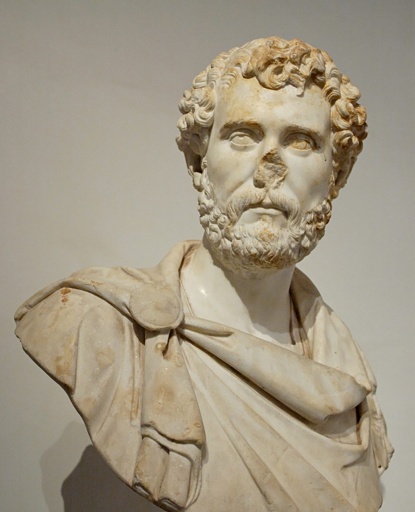

Unit 6 · Slavery in ancient Rome · Lesson 6
Property and person: the legal status of enslaved people
What did Roman law say an enslaved person was, and what can law-books show us about how people were really treated?
Year 11 Ancient History · Present with → or space · Read on a phone with R

Connect · 3 minutes · books closed · everyone writes · press K for the timer
Your Lesson 5 thesis, from memory
Write your Lesson 5 thesis from memory. Then underline the words that make it arguable.
Keep your thesis words in mind: today you write a paragraph of your own, and its opening sentence has to do the same job.
- 1Could someone disagree?A judgement, not a fact. Look for a degree (mainly, largely, only partly) or a concession (although …).
- 2Does it name its main reasons?The reasons are inside the thesis, so the reader knows how the argument will go. Look for because …, and for the reasons themselves.
- 3Slip to avoidA thesis that only announces the topic (“This paragraph will …”), or one that states a fact nobody could contest.
Learning intentions and success criteria · 2 minutes
Today’s goals
- analyse the legal status of enslaved people in Roman law
- combine an ancient source and a historian’s view in one Evidence move
- explain what it meant to be property in Roman law, with two legal sources
- explain the limits of law as evidence of practice
- write an Evidence move that joins a legal text and a historian, in the right tenses
Syllabus outcomes: AH-11-03 explains the role and significance of forces, features, events, individuals and groups in shaping the past · AH-11-05 analyses different types of sources for evidence to support a historical account or argument · AH-11-07 communicates historical understanding, applying historical knowledge, terms and concepts. Life Skills: AH-LS-08 uses sources to form conclusions about the past · AH-LS-11 communicates information about the past using historical terms and concepts.
Note-making · the routine for the whole course
How to structure your notes
questions and key terms, written after
short phrases, arrows (→ leads to), abbreviations (c. = about; ref. = reference)
- 1A new pageA cue column about a quarter of the page wide; title and date at the top; room for a summary at the bottom.
- 2Listen and look, then writePhrases, not sentences. Today: every rule with its source and reference.
- 3Write your own notes at the ✎ checkpointThen compare with the model notes, one row at a time. Add what you missed in a second colour.
- 4Write the cue questions afterwardsUse exam verbs: explain, assess. To revise, cover your notes and answer the cues.
- 5Finish with a three-sentence summaryOne checkpoint today: property or person? The law cards in your booklet are your notes for the We do.
Key vocabulary · add to the unit word wall
Words for talking about law
| From the unit list | Meaning |
|---|---|
| Explain (NESA) | NESA, Glossary of key words: ‘Relate cause and effect. Make the relationships between things evident. Provide why and/or how.’ Department advice: show how and why, and which reason mattered most. |
| Signal phrase | Words that introduce evidence and name its source, for example ‘Gaius, a jurist writing about 160 CE, states …’ |
| Jus gentium | ‘The law of nations’: rules Romans thought all peoples shared, under which they classed slavery. |
| Peculium | Property an owner allowed an enslaved person to manage and use, though the owner still owned it. |
| Owner / master | The person who legally owned an enslaved person; the syllabus says ‘masters’. |
| Added today | Meaning |
|---|---|
| Jurist | A Roman legal expert whose written opinions were treated as authoritative; Gaius is one. |
| Digest | A collection of jurists’ writings compiled for the emperor Justinian and published in 533 CE. |
| Edict | A magistrate’s public notice of the rules he would enforce. The aediles, who supervised markets, issued one on sales. |
| Senatus consultum | A decree of the Roman senate (plural senatus consulta). |
| Manumission | Freeing an enslaved person; the person freed was a freedman or freedwoman. |
| Legal status | A person’s position in law: free or enslaved, a citizen or not. |
1 · Property and person · I do — think aloud · 3½ minutes
A person who is legally a thing
The first division of men by the law of persons is into freemen and slaves.
Gaius, Institutes 1.9, about 160 CE · trans. E. Poste, rev. E. A. Whittuck (1904). Gaius adds (1.11) that freedmen are freed “by manumission from legal slavery”. Manumission: freeing.
Slavery is a creation of the jus gentium, by which a man is subjected, contrary to nature, to ownership on the part of another.
Florentinus, in the Digest 1.5.4.1: a jurist of the 2nd–3rd centuries CE, in a collection published in 533 CE · trans. C. H. Monro (1904). The jus gentium was the law Romans thought all peoples shared.
Slaves are in the power of their proprietors … masters invested with power of life and death over slaves; and (by the Roman law) the owner acquires everything acquired by the slave.
Gaius, Institutes 1.52, about 160 CE · trans. E. Poste, rev. E. A. Whittuck (1904). A proprietor is an owner.
- 1Sorted into two classesGaius 1.9, and the Digest (1.5.3), which quotes Gaius, divide all human beings into free and enslaved. The free are freeborn or freed.
- 2A legal creationFlorentinus writes that slavery runs ‘contrary to nature’, yet he states it as law: a rule of the jus gentium, not a fact of nature.
- 3The owner’s sidePower of life and death. What an enslaved person acquires, the owner acquires: the owner, not the enslaved person, owns it.
- 4So: a person who is legally a thingJane Gardner (2011, p. 415) puts it this way: “Slaves were ‘things’ (res), i.e., property.”
1 · Property and person · I do — think aloud · 2½ minutes
Why would an emperor limit owners’ power?
… neither Roman citizens, nor any other persons under the empire of the Roman people, are permitted to indulge in excessive or causeless harshness towards their slaves. By a constitution of the Emperor Antoninus, a man who kills a slave of whom he is owner, is as liable to punishment as a man who kills a slave of whom he is not owner … on proof of intolerable cruelty a proprietor should be compelled to sell his slaves: and both ordinances are just, for we ought not to make a bad use of our lawful rights …
Gaius, Institutes 1.53, about 160 CE, on rulings of the emperor Antoninus Pius (reigned 138–161 CE) · trans. E. Poste, rev. E. A. Whittuck (1904). Gaius’s Latin limits the first ruling to killing sine causa (without cause); Poste’s English leaves the words out. The second ruling answered inquiries from provincial governors about enslaved people who took refuge at temples and at statues of the emperor.

Think aloud: why would an emperor limit owners’ power?
Gaius gives one reason: owners ought not to ‘make a bad use of our lawful rights’. He also names a trigger: governors had to deal with enslaved people who took refuge at temples and at statues of the emperor. Neither ruling ends ownership: the first covers only killing without cause (the Latin sine causa), and a cruel owner had to sell.
Notes checkpoint · I do · 2 minutes · cue: what was an enslaved person in law?
Property or person? The status in law
2 · The law in action · We do — read the extracts (1 of 2) · 1½ minutes
The peculium and the sale edict
… care must be taken that they have a bit of property of their own, and mates from among their fellow-slaves to bear them children; for by this means they are made more steady and more attached to the place.
Varro, De Re Rustica (On Agriculture) 1.17.5, 37 BCE · trans. W. D. Hooper and H. B. Ash (Loeb, 1934). Varro’s Latin word for this ‘bit of property’ is peculium.
A historian · Jane F. Gardner, “Slavery and Roman law”, Cambridge World History of Slavery vol. 1 (2011), pp. 421–2: “The peculium had to be specifically allocated by the master to a separate account, and remained his property.” If the enslaved person made a deal without the owner’s authorisation, the owner could be sued, but he was liable “only up to the value of the peculium” (p. 422); for deals he had authorised, he was liable in full.
See to it that the sale ticket of each slave be so written that it can be known exactly what disease or defect each one has, which one is a runaway or a vagabond, or is still under condemnation for some offence.
Aulus Gellius, Attic Nights 4.2.1, later 2nd century CE, quoting the edict of the curule aediles, the magistrates who supervised markets · trans. J. C. Rolfe (Loeb, 1927).
A historian · Gardner (2011), p. 416: the edict “applied to sales both of slaves and of beasts of burden”.
As you read: underline the rule, box who it protects, and circle what the owner or buyer was worried about.
2 · The law in action · We do — read the extracts (2 of 2) · 1½ minutes
A murdered owner, and chains and branding
Ancient custom required that the whole slave-establishment which had dwelt under the same roof should be dragged to execution …
… the Senate’s decree, which threatens the entire slave-establishment with execution …
Tacitus, Annals 14.42 (the first), and 14.43, in the speech he gives the senator Gaius Cassius (the second); early 2nd century CE, on the murder of the city prefect in 61 CE · trans. A. J. Church and W. J. Brodribb (1876).
A historian · Gardner (2011), p. 430, on the senatus consultum Silanianum of about 10 CE: it “provided that, if a master was killed, all slaves in the household were to be interrogated under torture, and any who might have prevented the killing were to be put to death.”
Tacitus does not name the decree; Gardner discusses his account of this case beside it.
… slaves who have been punished by their proprietors with chains, or have been branded, or have been examined with torture on a criminal charge, and have been convicted … if subsequently manumitted by the same or by another proprietor, shall acquire by manumission the status of enemies surrendered at discretion.
Gaius, Institutes 1.13, about 160 CE, on the lex Aelia Sentia (4 CE) · trans. E. Poste, rev. E. A. Whittuck (1904).
A historian · Gardner (2011), p. 429: “certain slaves, even if manumitted, were never to be allowed citizenship”; and, as Watson (1987) pointed out, “the law does not question the rightness or otherwise of their owner’s treatment of them.”
As you read: underline the rule, box who it protects, and circle what the owner or the senate was worried about.
We do — pairs complete the law cards in your booklet · 4 minutes
Law cards: rule, who it protects, what it reveals, its limits
Cards: 1 freeing · 2 peculium · 3 sale edict · 4 Antoninus Pius · 5 murdered owners.
| Rule | Who it protects | What it reveals about owners | Limits as evidence |
|---|---|---|---|
| 1 · Freeing (Gaius 1.13) | The free community, from freed people seen as “undesirable and a threat to society” (Gardner, p. 429) | Owners chained and branded; the law took this for granted (Gardner, p. 432) and did not question “the rightness or otherwise” of it (following Watson) | What the law expected, not how often owners did it |
| 2 · Peculium (Varro 1.17.5) | Owners first: it stayed theirs; for unauthorised deals they owed “only up to the value of the peculium” (Gardner, p. 422) | Owners used “a bit of property” and mates as rewards to keep foremen “more steady and more attached to the place” | A handbook’s advice, not a count of how many held one |
| 3 · Sale edict (Gellius 4.2.1) | The buyer: the seller had to declare disease, defect and running away | Sellers probably could not be trusted to say (an inference); the rule also covered beasts of burden (Gardner, p. 416) | What sellers had to declare, not what they did |
| 4 · Antoninus Pius (Gaius 1.53) | Enslaved people a little, owners as much: “as much, or more, concern for owners as for their slaves” (Gardner, p. 433) | Some enslaved people took refuge, apparently from cruelty, at temples and statues of the emperor (Gaius) | Rulings, not cases; the enslaved gained “merely a change to another and – possibly – kinder owner” (Gardner) |
| 5 · Murdered owners (Tacitus 14.42–43) | Owners: “No household can be safe unless slaves are compelled, at risk of their own lives, to guard their masters …” (Ulpian, Gardner p. 430) | Owners feared the people they owned; the rule fell on a whole household | A rule and one famous case, not how often owners were murdered |
2 · The law in action · We do — opinion continuum · 4 minutes · vote first, then give evidence
“Roman law treated enslaved people only as property.”
Choose a place on the line. Be ready to give one piece of evidence from today: the peculium, the sale edict, Antoninus Pius.
The owner “acquires everything acquired by the slave” (Gaius 1.52). The sale edict covered “sales both of slaves and of beasts of burden” (Gardner, p. 416). The peculium “remained his property” (Gardner, p. 421). The law counted chains and branding without asking whether they were right (Gaius 1.13; Gardner, p. 429).
Florentinus calls slavery ‘contrary to nature’ (Digest 1.5.4.1). Antoninus Pius made killing one’s own enslaved person without cause punishable (though Gardner, p. 433, thinks this may be property law) and ordered forced sale for “intolerable cruelty” (Gaius 1.53). In practice, an owner’s handbook advised giving foremen “a bit of property of their own” (Varro): advice, not law. Gardner: “as they were human beings, they did not always fit tidily within the category of ‘things’” (p. 423).
The hard word is “only”. A strong answer uses evidence from both ends, and says what each piece can and cannot show.
3 · You do · Writing focus · 7 minutes · I do → We do → apply
Writing focus: join an ancient source and a historian in one Evidence move
An Evidence move has two parts: the ancient source, with who wrote it and when, its exact words and its reference; then a historian, named, in the present tense.
Worked example · written for this lesson · on Lesson 4’s evidence, not today’s question
Columella, an owner writing in the mid-1st century CE, says that “to a mother of three sons exemption from work was granted” (1.8.19), and Scheidel (2011) notes that it is “unclear” whether such cases “were rare or common”.
Source and provenance: who, and when (a signal phrase)
Words and reference: exact, in quotation marks, with the section
Historian: named, with the year, in the present tense
The historian’s hedge: kept in his own words
Join these two in one sentence, in the right tenses:
Pliny the Elder, Natural History 33.135 (written in the 70s CE): the will of Isidorus, 8 BCE, says he could leave “four thousand one hundred and sixteen slaves”.
Scheidel (2011, p. 288), on the 400 Tacitus gives Pedanius Secundus’s household in a speech he wrote for a senator (Annals 14.43): “a purely symbolic number”.
Check it has: source and provenance · words and reference · the historian, named, in the present tense.
Pliny the Elder, writing in the 70s CE, reports that Isidorus declared in his will of 8 BCE that he could leave “four thousand one hundred and sixteen slaves” (33.135), but Scheidel (2011) calls another large figure, the 400 that Tacitus gives Pedanius Secundus’s household, “a purely symbolic number”.
After your answer sentence, write your first reason’s Evidence sentence, joining a legal text and a historian: “[Source], [who and when], states that “…” (ref.), and [historian] (year) notes that …” Your Writing toolkit (booklet pages 3–4): attribution verbs.
3 · You do · 20 minutes · check first · then write for 14 · press K for the timer
Explain the legal status of enslaved people in Roman law.
Check first: what does this question ask you to do?
- Verb
- explain: NESA, Glossary of key words, ‘Relate cause and effect. Make the relationships between things evident. Provide why and/or how.’ Department advice: show how and why, and which reason mattered most
- Topic
- the position Roman law gave enslaved people: what the law said they were, and how it treated them
- Limits
- Roman law, in our period (about 200 BCE – 200 CE); what the legal sources show, which is rules and owners’ worries, not daily life
- Do
- an answer first, with its main reason; two reasons, each with a legal source; one sentence joining a legal text and a historian, in the right tenses; weigh which mattered most
The Digest was compiled in 533 CE. Evaluate how far a 6th-century compilation of mostly 2nd–3rd-century jurists can be evidence for slavery in our period.
- Answer: the status Roman law gave enslaved people, and the main reason, with a qualification.
- Reason + evidence: a connective, a legal source with its signal phrase and reference joined to a historian in one sentence, and what it shows.
- Reason + evidence: a second reason, with a legal source and what it shows.
- Weigh: which reason mattered most, and what law cannot show.
First sentence: “Roman law gave enslaved people the status of …, mainly because …” Word bank:
3 · You do · self-check · 3 minutes · then, after you write, compare with a model
Check your paragraph
Roman law treated enslaved people mainly as property, although it could not ignore that they were human beings. The first reason is the owner’s power: Gaius, a jurist writing about 160 CE, states that masters were “invested with power of life and death over slaves” and that “the owner acquires everything acquired by the slave” (Institutes 1.52), and Gardner (2011) notes that enslaved people “were ‘things’ (res), i.e., property”. A second reason is how the law handled them in the market: the aediles’ edict, which Gellius quotes, required each sale ticket to show “what disease or defect each one has” (4.2.1), rules that, Gardner says, covered “sales both of slaves and of beasts of burden”. Yet Florentinus calls slavery “contrary to nature” (Digest 1.5.4.1), and Antoninus Pius ruled that a man who killed a person he enslaved without cause was “as liable to punishment as a man who kills a slave of whom he is not owner” (Gaius 1.53). Gardner reads Antoninus’s rulings as showing “as much, or more, concern for owners as for their slaves”. All of this is law, so it shows the rules jurists set and what worried owners, not how people were treated day by day.
An answer that weighs Florentinus’s “contrary to nature” and Antoninus Pius more heavily can also work, if its evidence supports it and it says what law cannot show.
Finish your notes If time · or at home
Summary: three sentences
- What did Roman law say an enslaved person was?
- What did Antoninus Pius’s rulings limit, and who gained most?
- What can law show about owners and enslaved people, and what can it not show?
Roman law sorted all people into free or enslaved and treated an enslaved person as property: the owner held “power of life and death” (Gaius 1.52), although Florentinus wrote that slavery was contrary to nature (Digest 1.5.4.1). Antoninus Pius made it punishable for an owner to kill a person he enslaved without cause and ordered forced sale for “intolerable cruelty” (Gaius 1.53), but Gardner (2011) sees “as much, or more, concern for owners as for their slaves”. Because law shows the rules jurists set and what worried owners, such as the sale edict and the decree on murdered owners, it cannot tell us how people were treated every day.
Check for understanding · hinge question · hold up your A, B, C or D card on “3, 2, 1, show” · 4 minutes
Which is the best use of the Digest as evidence?
- AIt shows how most owners treated enslaved people day to day, because law records practice.
- BIt shows the rules jurists set and the worries owners had, because law answers problems.
- CIt shows what enslaved people themselves thought of these rules, because jurists sometimes consulted them.
- DIt shows the law as it stood in 200 BCE, because jurists rarely changed rules.
The Digest collects what jurists wrote about rules and problems: like each law card, it shows rules and worries. A is wrong: a rule tells us what jurists said should happen, not what most owners did. C is wrong: nothing in these texts records what enslaved people thought of the law. D is wrong: the Digest was compiled in 533 CE from jurists mostly of the 2nd–3rd centuries CE, so it cannot show the law of 200 BCE as it stood.
Exit ticket · 3 minutes · before you leave
Your Evidence sentence
Write one Evidence sentence that joins a legal source and a historian from today. Name the source and when it was written, give its words (or a close paraphrase) with the reference, then say what the historian notes or argues, in the right tenses.
a signal phrase with provenance (“Gaius, a jurist writing about 160 CE, states …”); the source’s words, or a close paraphrase, with the reference (Institutes 1.52); the historian named, with the year and a present-tense verb (Gardner notes, argues, says); past tense for what happened and present tense for what writers say; ‘enslaved people’ outside quotations; and, for the strongest answers, the historian’s own hedge or a hedge of yours.
Then check yourself against today’s three “I can” statements. Next lesson: owners’ attitudes: Cato, Varro, Columella and Seneca.
Practice and review · 1 of 4 · true, false, justify
True or false? Justify your answer
- 1Gaius and the Digest divide human beings into two classes: free and enslaved. True — Gaius 1.9 and Digest 1.5.3, which quotes him; the free were then freeborn or freed.
- 2Florentinus calls slavery a natural condition. False — it is “a creation of the jus gentium” and runs “contrary to nature” (Digest 1.5.4.1).
- 3The peculium belonged to the enslaved person who managed it. False — it “remained his property”: the owner’s (Gardner, p. 421).
- 4The aediles’ edict made sellers state a person’s disease or defect, and whether he or she was a runaway. True — Gellius 4.2.1: “what disease or defect each one has, which one is a runaway or a vagabond”.
- 5Antoninus Pius made it illegal to kill an enslaved person in every case. False — Gaius 1.53 makes killing one’s own enslaved person as punishable as killing another’s; the Latin limits the ruling to killing sine causa (without cause), which Gardner renders “without a cause known to the law” (p. 433).
- 6The Digest, published in 533 CE, shows the law of 200 BCE exactly as it stood. False — it was compiled from jurists mostly of the 2nd–3rd centuries CE (Gardner, p. 414), so it cannot show the law of 200 BCE as it stood.
Practice and review · 2 of 4 · writing
Rules and worries, and a sentence to fix
- The sale edict
- The decree on murdered owners
- Antoninus Pius’s forced sale
- Varro’s advice on the peculium
Choose from: a buyer being cheated · an owner being killed by the people he owned · what governors should do about enslaved people who took refuge at temples and statues · keeping foremen steady and loyal.
1: a buyer being cheated. 2: an owner being killed by the people he owned (Ulpian’s reason, in Gardner). 3: what governors should do about enslaved people who took refuge at temples and statues (Gaius 1.53). 4: keeping foremen steady and loyal (Varro 1.17.5). Each is a worry behind a rule: none records what owners did every day.
“Gaius proves that all owners could kill their slaves.” Fix the verb, the claim and the word for the people.
Gaius, a jurist writing about 160 CE, states that masters held “power of life and death over slaves” (1.52), but he also reports that Antoninus Pius made it punishable for an owner to kill a person he enslaved without cause (1.53).
Practice and review · 3 of 4 · extension
A 6th-century compilation: how far is it evidence for our period?
The Digest was compiled in 533 CE. Evaluate how far a 6th-century compilation of mostly 2nd–3rd-century jurists can be evidence for slavery in our period.
A 6th-century compilation is useful but limited evidence for slavery between about 200 BCE and 200 CE. Gardner notes that the Digest “was compiled from the works of the major jurists, especially the five great jurists of the late second and early third century”, so it speaks most clearly for the end of our period, and what it records are rules and owners’ worries, not daily life. Yet the jurists “refer to, or even directly quote, many earlier laws” and cite earlier jurists “going as far back as the late Republic”, and the Digest credits its sentence on the division of people to Gaius, whose Institutes 1.9 says the same: the compilers and copyists passed older law down, although we cannot be sure how far they changed it. So the Digest is good evidence for what jurists of the 2nd–3rd centuries CE wrote, and weaker evidence for earlier law and for practice.
Practice and review · 4 of 4 · cover your notes and answer from memory
Quick checks
- What did Roman law say an enslaved person was? A human being who was legally owned: the law sorted people into free and enslaved, classed slavery as a creation of the jus gentium (‘contrary to nature’, Florentinus), and gave the owner power of life and death and everything the enslaved person acquired (Gaius 1.52). Gardner: “things” (res), i.e., property.
- What was the peculium? Property an owner allowed an enslaved person to manage and use, though the owner still owned it (Varro 1.17.5; Gardner, p. 421).
- What did the sale edict require, and what does it show? Sellers had to state each person’s disease or defect and whether a runaway or vagabond (Gellius 4.2.1). It shows a buyer’s worry and a rule that also covered beasts of burden; not what sellers actually did.
- What did Antoninus Pius change, and who gained most? Killing one’s own enslaved person without cause became punishable, and a proved “intolerable cruelty” meant forced sale (Gaius 1.53). Gardner sees “as much, or more, concern for owners as for their slaves”: the enslaved gained, she says, “merely a change to another and – possibly – kinder owner”.
- Why is law limited as evidence of practice? It shows the rules jurists set and what worried owners, not what owners did every day; Gaius reports rulings, not cases; and the Digest was compiled in 533 CE from jurists mostly of the 2nd–3rd centuries CE.
- What are the parts of an Evidence move that joins a source and a historian? The source, who wrote it and when; its exact words with the reference; the historian, named with the year, in the present tense; past tense for what happened, present tense for what writers and historians say.
Sources and credits
Where everything comes from
Gaius, Institutes 1.9–1.13 and 1.52–1.53: trans. E. Poste, Gai Institutiones or Institutes of Roman Law, 4th edn, rev. E. A. Whittuck (Oxford: Clarendon Press, 1904, public domain), archive.org. Digest 1.5.3–1.5.4: trans. C. H. Monro, The Digest of Justinian, vol. 1 (Cambridge, 1904, public domain), archive.org. Tacitus, Annals 14.42–43: trans. A. J. Church and W. J. Brodribb (1876, public domain), Perseus Digital Library (CC BY-SA 3.0 US). Aulus Gellius, Attic Nights 4.2.1: trans. J. C. Rolfe (Loeb, vol. I, 1927, public domain), LacusCurtius. Varro, De Re Rustica 1.17.5: trans. W. D. Hooper and H. B. Ash (Loeb, 1934, public domain), LacusCurtius. Columella, De Re Rustica 1.8.19: trans. H. B. Ash (Loeb, vol. I, 1941, public domain), LacusCurtius. Pliny the Elder, Natural History 33.135: trans. J. Bostock and H. T. Riley (1855, public domain), Perseus Digital Library (CC BY-SA 3.0 US).
Modern historians, quoted briefly: J. F. Gardner, “Slavery and Roman law”, pp. 414–37, and W. Scheidel, “The Roman slave supply”, pp. 287–310, in K. Bradley and P. Cartledge (eds), The Cambridge World History of Slavery, vol. 1 (Cambridge University Press, 2011). Dates of Gaius, the Digest, Antoninus Pius and Gellius: Wikipedia, “Institutes (Gaius)”, “Digest (Roman law)”, “Antoninus Pius”, “Aulus Gellius”. The NESA Glossary of key words (definitions quoted word for word).
Outcomes and content: NSW Education Standards Authority (NESA), Ancient History 11–12 Syllabus (2024). © NESA.
- The Verona palimpsest, the main manuscript of Gaius’s Institutes: opened leaves in the Biblioteca Capitolare, Verona (Gaius’s text, copied probably in the 5th century CE, lies erased under later writing) · Photo: Punteador · CC BY-SA 4.0 · source
- Marble portrait of the emperor Antoninus Pius (reigned 138–161 CE), from the stadium on the Palatine Hill, Rome (Antiquarium of the Palatine, inv. 1219) · Photo: Marie-Lan Nguyen (Jastrow) · Public domain · source
_%E2%80%93_Gaius_palimpsest,_opened_leaves.jpg){kind=link}

All images are public domain or openly licensed, and were resized or cropped for the web. Each is shared under the licence shown.